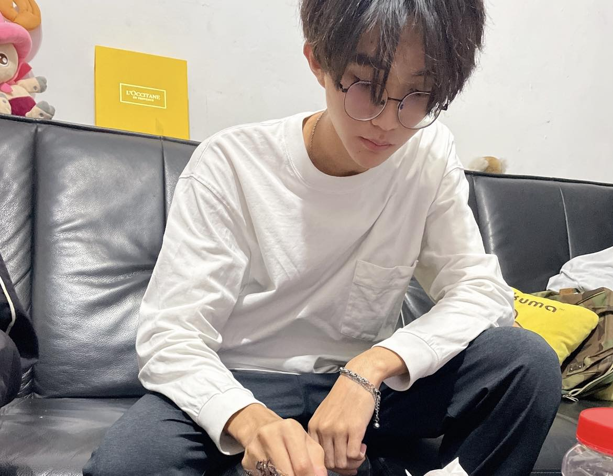

左營高中_柯安聰_作品集
<這不僅僅是我的作品集，更是我存在過的明證>

座右銘：
<不屈不撓，不懈不怠>
<只有瘋狂到認為自己能改變世界的人，才能真正的改變世界>
自我介紹：
我叫做柯安聰，是來自左營高中的學生。
我家裡是清寒家境，為低收入戶，同時我也有新住民及其子女的身分。
個性樂觀且善於助人，勇敢面對困難及挑戰。
對於科技、人文領域有興趣。
喜歡參與一些科技、文學講座以增廣視野。
也熱於去擔任志工，幫助長者或幼童等愛心服務
求學過程：
我從高中之時就發現到自己在寫作方面擁有天賦，因此我也創作了不少的作品。
目前投稿的作品中，總共有十餘件，都是我在擔任志工時聽到的故事，以及我自己的心靈成長故事。
像是擔任志工這件事讓我發現到了許多不同的故事。
我在高中的時候發現到自己對科技方面富有興趣，尤其是程式設計、人工智慧概論。
而在高中之時也接涉及了不少的科技領域知識，我曾經參加過十餘場的科技領域講座。
而我自己也去參加過有關寫程式的研習活動。基於程式設計的興趣，我學過C語言、Python、Html、Css等程式語言。我也自己做過一個網站。